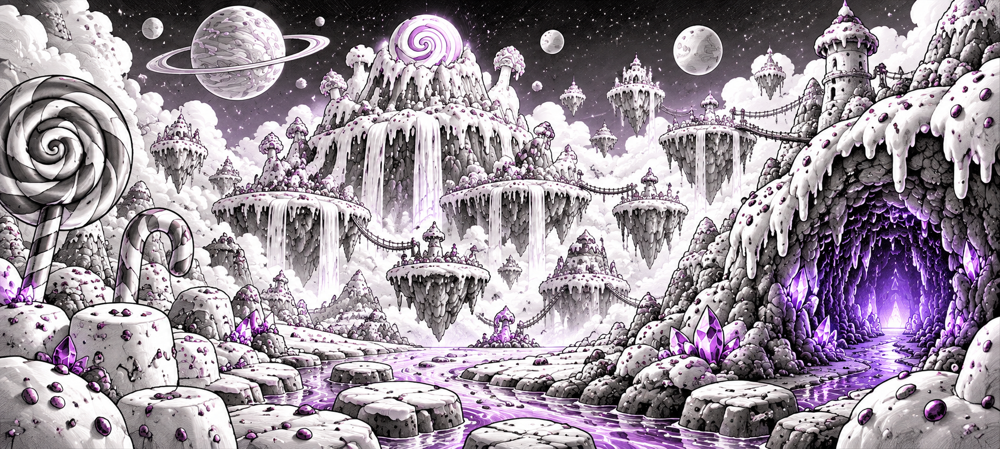
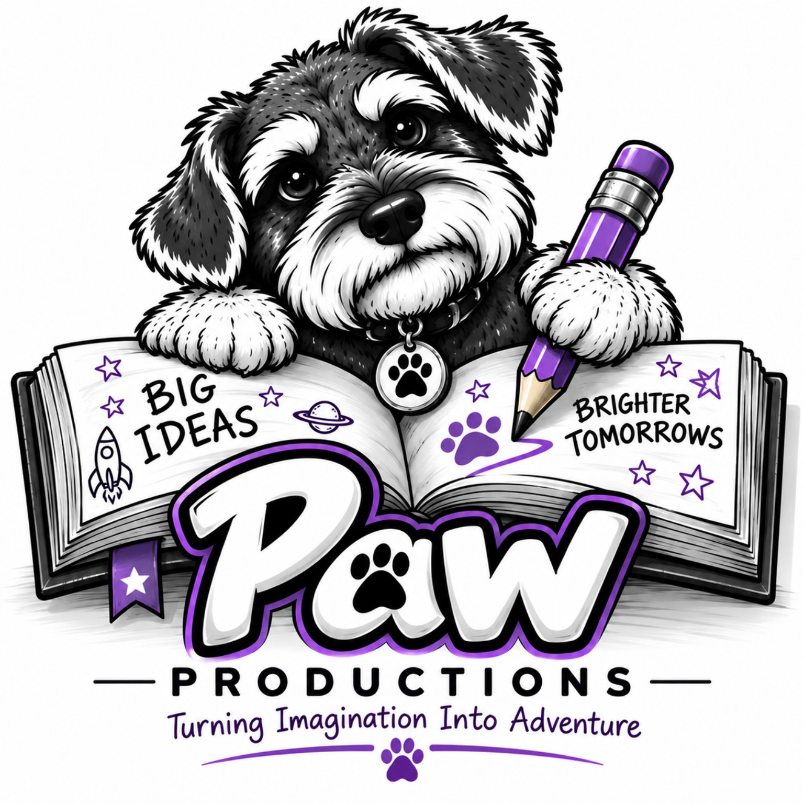
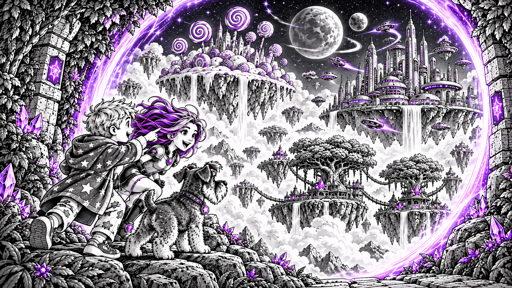
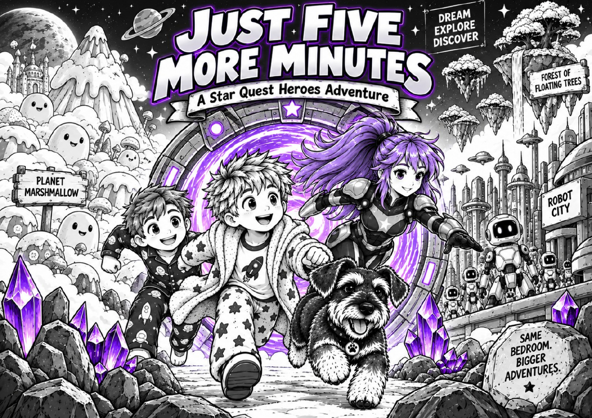
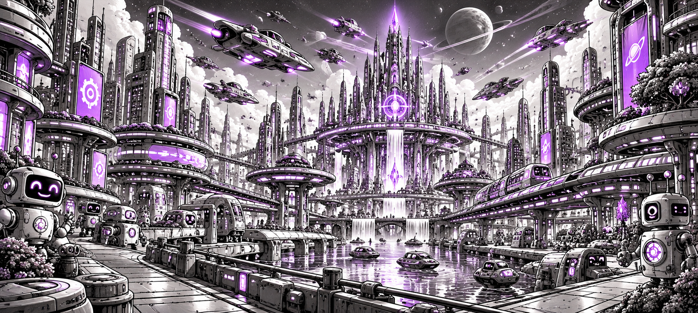
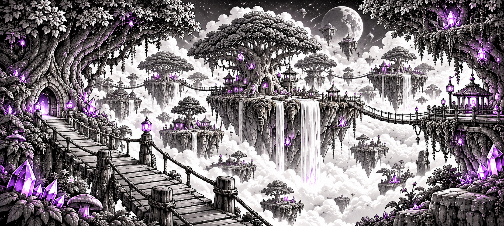

WORLD 01


One ordinary bedroom. One impossible portal. And an adventure that turns five more minutes into something much bigger.
Discover the book
OUR FIRST ADVENTURE
When Joseph says “just five more minutes,” a gaming session turns into an incredible journey across magical worlds with the help of Nova - while Amos, probably the sensible one, stays behind.
Planet Marshmallow. Robot City. The Forest of Floating Trees. Three crystals. And one mystery that has only just begun.



READY, SPACE PILOT?
Jump into the adventure! Pilot your spaceship, collect crystals, dodge danger and rescue Amos in Star Quest: Crystal Dash.
PLAY CRYSTAL DASH PLAY MARSHMALLOW MAYHEM PLAY CRYSTAL SCRAMBLE PLAY THE HIDDEN TREASURELOOK CLOSER...
Strange things are hidden throughout the adventure. If you find one... scan it. You never know what you might unlock.
Enter Star Quest SecretsPAW PRODUCTIONS
Imaginative stories made for curious minds, big dreams and adventures worth sharing.